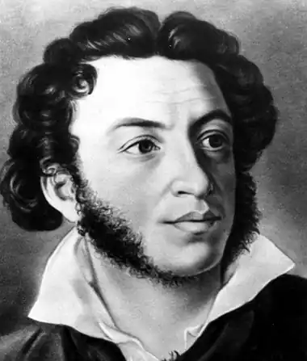
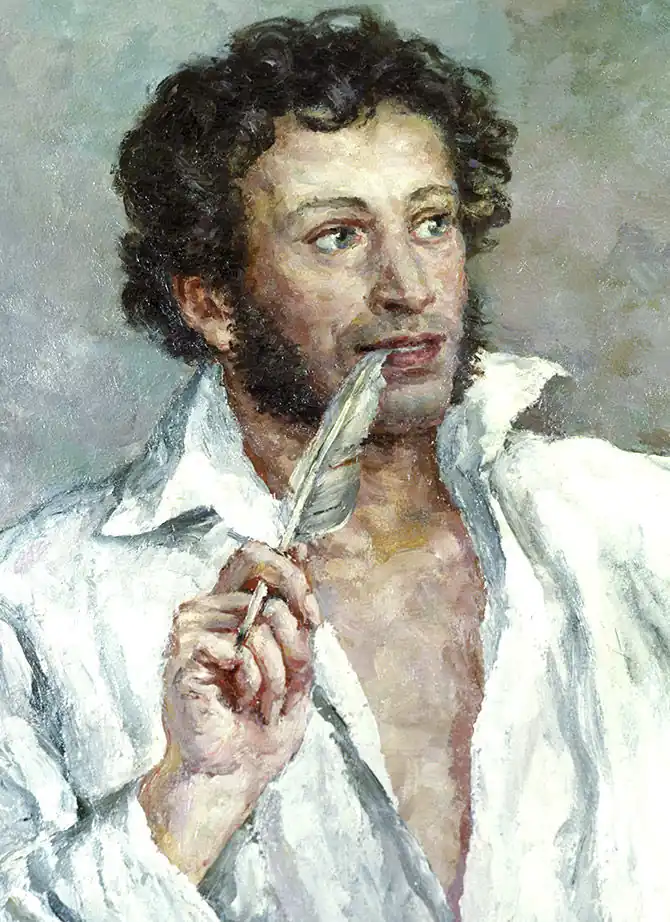
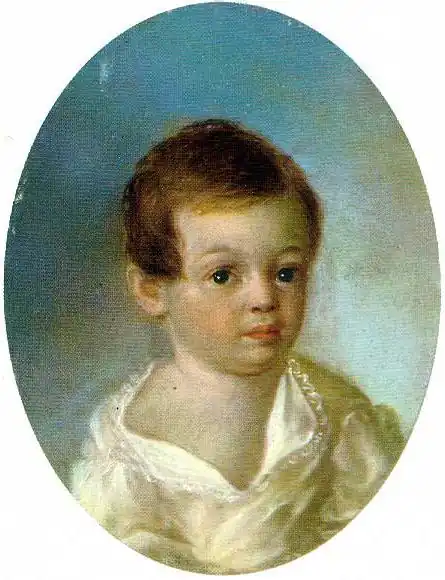

Пушкін Олександр
(1799-1837)
Відомий російський поет, лірик, казкар, який першим наважився ввести народну російську мову на сторінки "високої літератури". У центрі уваги поета — історія власного народу, призначення і місія покоління, до якого належав сам поет. З дитинства Олександр Пушкін багато читав, спілкувався з відомими літераторами, у його батька була велика бібліотека, і майбутній поет багато часу проводив серед своїх добрих друзів — книг. Поетичний дар у нього прокинувся у Ліцеї, де він навчався у 1811—1817 роках, а перші відомі нам вірші датовані 1813 роком. Талант поета був одразу визнаний такими майстрами слова, як Державін, Батюшков, Жуковський. Війна Росії з Наполеоном вносить у його поезію тему свободи. Пушкін не став членом політичної організації, як багато його однодумців, але вірші його ("Вольність", "До Чаадаєва") відкрито демонструють гарячу підтримку тим, хто хоче змінити на краще життя в Росії. За сміливі думки і за волелюбні вірші його вислали в Україну. Він бував у Дніпропетровську (тоді Катеринослав), в Одесі, в Криму, у Києві. Прогулянки Києвом та перекази, почуті про київського князя Олега, надихнули його на створення "Пісні про віщого Олега". Російський фольклор, з яким він з дитинства знайомився через перекази своєї няньки Орини Родіонівни, знайшов своє відтворення у казках Пушкіна про золоту рибку, про мертву царівну та сім богатирів, про золотого півника, про робітника Балду, у поемі "Руслан і Людмила". Пушкін — неперевершений лірик. Багато поезій Пушкіна покладено на музику. Роман у віршах "Євгеній Онєгін" приніс Пушкіну славу. Поет виявив болючі проблеми суспільного життя, намагався відтворити життя Росії та її кращих представників, які зневірилися у значенні власного життя. У доробку Пушкіна є прозові твори: "Повісті Бєлкіна", "Дубровський", "Маленькі трагедії", "Капітанська дочка", історична трагедія "Борис Годунов", історична поема "Полтава" та ін.